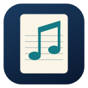
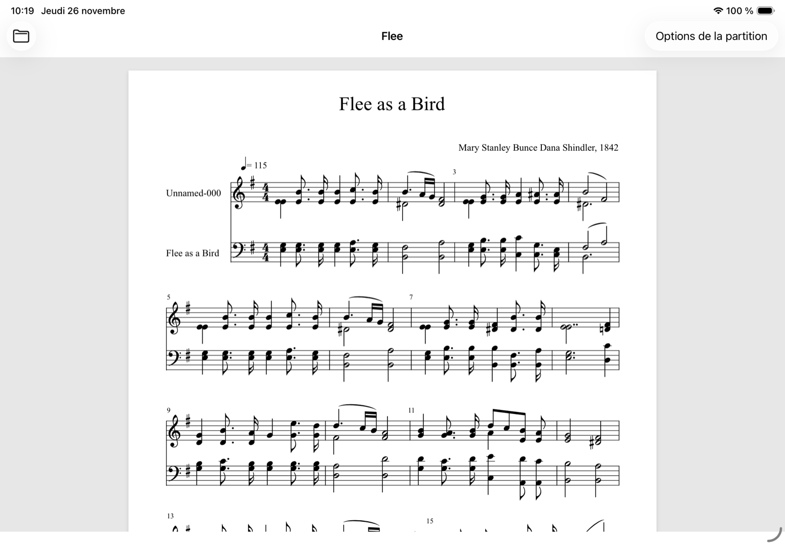

Mac
macOS 13 or later · Intel and Apple silicon
Download for Mac ↓Unzip the download and drag NWC Viewer into Applications. Future updates arrive in the app.

NWC ViewerNoteWorthy Composer file reader
Open a .nwc file, find your voice and pick up where you left off. Read, print and save sheet music offline on Mac, iPhone and iPad.
Get NWC Viewer
macOS 13 or later · Intel and Apple silicon
Download for Mac ↓Unzip the download and drag NWC Viewer into Applications. Future updates arrive in the app.
iOS 16 or iPadOS 16 or later
Public App Store release in preparation.
Invited beta testers can open TestFlight to install available builds.